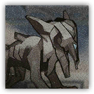

逐腐兽 Rotchaser
近战 物理；普通 感染生物
|  |
食腐者之王的源石技艺造物。拥有较快的速度，无法理解何为治愈。制造死亡为它们生命的全部，因此当治愈的力量出现时，它们的能力将在目标身上失去效果。 |
逐腐兽 | Rotchaser
中型异怪（法术造物），无阵营
| AC 13 | 先攻 +4（14） |
| HP 52（8d8+16） | |
| 速度 40尺 | |
| 调整 | 豁免 | 调整 | 豁免 | 调整 | 豁免 | |||||||||
|---|---|---|---|---|---|---|---|---|---|---|---|---|---|---|
| 力量 | 16 | +3 | +3 | 敏捷 | 15 | +2 | +2 | 体质 | 15 | +2 | +2 | |||
| 智力 | 3 | -3 | -3 | 感知 | 9 | -1 | -1 | 魅力 | 7 | -2 | -2 |
| 技能 察觉+3，隐匿+4 |
| 感官 黑暗视觉30尺，被动察觉13 |
| 语言 无 |
| CR 3（XP 700；PB +2） |
特质 Traits
巫术造物 Hexed Creature。逐腐兽为抵抗法术和其它魔法效应而作的豁免检定具有优势。
食腐天性 Scavenging Nature。逐腐兽攻击一个生命值未满且不免疫力竭的活体生物时，其攻击检定有优势。
动作 Actions
多重攻击 Multiattack。逐腐兽发动两次凋死之咬攻击。
啃咬 Bite。近战攻击检定：+5，触及5尺。命中：7（1d8+3）穿刺伤害。被命中的生物必须通过DC14体质豁免，否则进入中毒状态。以此中毒的生物每次开始回合时会受到5（2d4）的黯蚀伤害，持续1分钟或直到其受到治疗为止。